📶 You’re offline — this phone is showing the last readings it collected. Their real ages are on the freshness board below; confirm with official sources before you travel.
📌 Your pins
The cards you pinned, living up here in the order you pinned them — live copies that refresh as the readings change, while the originals stay right where they belong. Tap a copy to jump to the real card; tap its 📌 Pinned button to unpin it.
Columbia County Live is signing exactly three founding sponsors. Their names stay on this panel for good, and their $49/mo rate never rises while they’re with us.
The County Watch checks the National Weather Service, the bridge and the ferry every two minutes while this page is open — and tells you the moment something new posts.
This space rotates free notices for Columbia County nonprofits — food banks, libraries, volunteer fire & EMS recruitment. A community service, not an ad.
Every founding sponsor keeps a permanent “Founding Sponsor · 2026” badge and a place on the Community Partners wall below — even if they later change tiers.
🔎
One search across every card on this page, all seven towns, and the events calendars — tap a result and the page takes you straight there.
🧭 Since you were away
Checking what changed…
🏠 Make it yours
Loading your town picker…
🚗 The Commute Verdict
Checking the corridor…
The one-line answer for the drive right now. The full corridor picture — bridge, incidents, and cameras — lives on the Travel tab.
🛟 Before You Go
The last look before the keys. Pick the trip and when you're leaving, and this card runs the page's own live checks — weather alerts, the corridor, the forecast for that hour, the boat math or the tide window, and how much light you'll have — then answers with one verdict. Take the answer with you: copy it, or drop the trip in your calendar.
Running the checks…
The checks use the same official sources as the rest of this page, at the moment you look. A green verdict is a snapshot, not a promise — weather, the corridor, and the river can all change after you've left.
🌙 Tonight & tomorrow
The evening check — what to sort out before bed: tonight's weather, tomorrow morning's drive, the first Oscar B sailings, and what's on tomorrow. Assembled from the same official sources as the rest of this page.
Looking ahead to tonight and tomorrow…
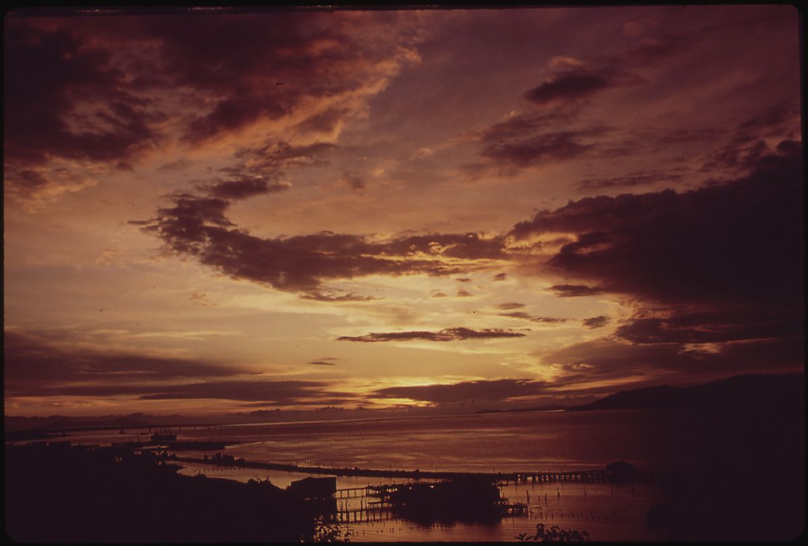
Schools — Closures & Delays
On storm mornings the districts decide early — St. Helens aims to decide by 6:00 AM — and post first on their own sites and apps. This card is a hand-updated storm-day board: in quiet weather it stands by and shows where each district posts; on a storm morning it carries that morning’s report for every district, checked against the district’s own posting before it goes up here.
✅ No closure or delay report is posted for today — this board is standing by for the next storm morning. Regular school days need no report.
Northwest Regional ESD (NWRESD)Regional programs follow NWRESD’s own noticesNo report yetNWRESD site →
No automated closure feed exists for these districts, so this board is updated by hand on storm mornings — and a district’s own site is always the final word for your family.
📋 The County Briefing
Today's answers in one place — assembled from the live panels on this page and stamped with the time it was put together. Copy it as a note for a family text, the neighborhood group, anywhere the county gathers. Driving? Tap 🔊 Hear the briefing and your phone reads it aloud instead — weather alerts first.
Putting today's briefing together…
That's everything for Today — the rest of the county is one tap away:
Town River gauge Earthquake (30 days) Bridge / ferry Aircraft Ship (AIS) WildfireUse the layer button (top-right of the map) to toggle radar, aircraft, ships, fires, and the ISS.
🧭 Your Commute — how long's the drive?
From
To
Working out the drive…
Typical drive — no live traffic. The time comes from the free OSRM routing service, driving the route at posted speeds in normal conditions — a closure, a bridge lift, or a crash on US-30 will change the real trip.
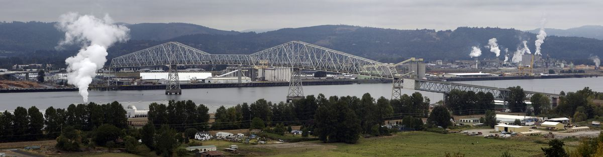
🚗 US-30, the Bridge & Roads
Loading Lewis & Clark Bridge status…
Highway incidents — ODOT TripCheck
Loading incidents…
📷 My Route — your commute cameras, in driving order
Loading route cameras…
Road cameras
Loading camera list…
Road data is collected by our fetcher from ODOT TripCheck and WSDOT every few minutes and shown with its snapshot time — it never pretends to be fresher than it is. Full official detail: TripCheck · WSDOT traffic. Commuting to Portland? A US-30 closure usually means Cornelius Pass or the St. Johns Bridge — check before you leave, not after.
🧭 Route Ahead — the Corridor Forecast
The next stretch of hours on the US-30 corridor, town by town — so ice, fog, or snow on the drive shows up here before it shows up on the windshield. Hourly from the National Weather Service.
Loading the corridor forecast…
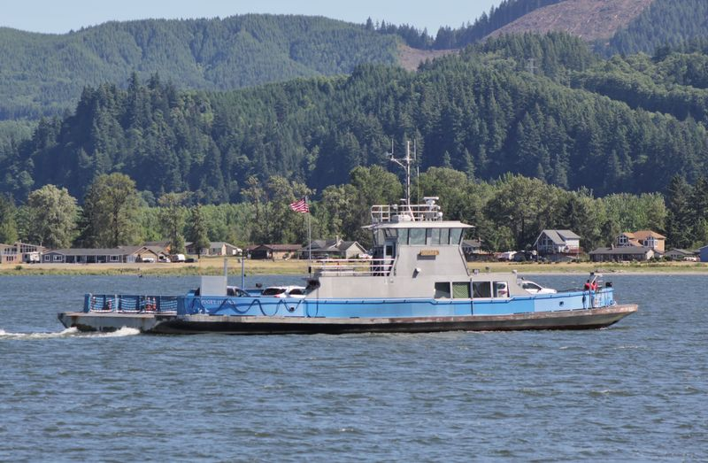
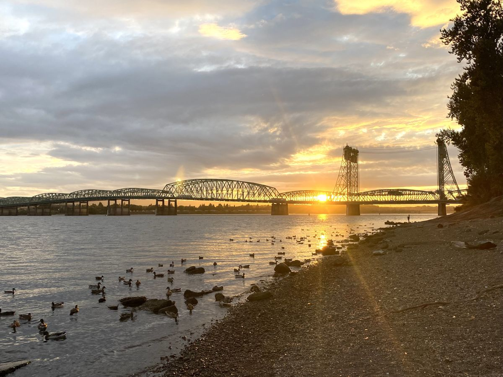
⛴️ Oscar B Ferry — Westport, OR ↔ Cathlamet, WA
Checking the county page for ferry closure alerts…
Working out the next sailing…
🧭 Catch the boat — when do you need to leave?
Working out when you'd need to leave…
Drive times are typical for US-30 / OR-47 in normal conditions — your trip will vary, and the boat doesn't wait. The plan adds a 10-minute cushion at the dock for parking, fares (cash or check only), and loading.
The last ferry on the Lower Columbia, run by Wahkiakum County. It sails on a fixed schedule — there's no live tracker, so the timetable below is the status, every day of the year. The alert line above is read from the county's official ferry page by our fetcher.
From Puget Island (WA side)
On the hour, 5:00 AM – 10:00 PM
From Westport (OR side)
Quarter past the hour, 5:15 AM – 10:15 PM
Fares (cash / check only)
Car $6 · Motorcycle $4 · Bicycle $3 · Walk-on $2
Bridge closed? The ferry historically runs extended hours during Lewis & Clark Bridge closures — confirm on the county page before counting on it.
Ships sorted by when they'll pass your home town — St. Helens until you pick one in “Make it yours” on the Today tab. ETAs use each ship's current reported speed, so a ship that slows down arrives later. Live positions from AISStream, refreshed about every five minutes.
✈️ Aircraft Overhead
Loading aircraft overhead…
Aircraft: community ADS-B receivers via adsb.fi. Refreshes automatically.
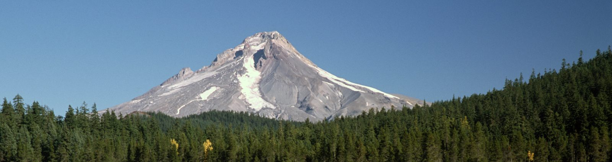
🏔️ The Bend Run — Pass Conditions
Outside the county, included because the trip starts here: the two ways this county drives to Bend — US-26 over Mt. Hood at Government Camp, and US-20 over Santiam Pass. Cameras and incidents from ODOT TripCheck; pass forecasts from the National Weather Service. The question this card answers: is there snow over the pass?
Working out when the station passes over the county…
Aircraft: community ADS-B receivers via adsb.fi. ISS position: wheretheiss.at. Pass times are computed on this page from the station's published orbit. All refresh automatically.
🌌 After Dark — Tonight’s Sky
Everything above is the sky right now. This card answers the evening question — is tonight worth going out to look up? Clouds, moonlight, the space station, the northern lights and the meteor showers, weighed together for your home town (or St. Helens if you haven’t picked one).
Reading tonight’s sky…
Cloud cover: Open-Meteo’s forecast model. Northern lights: NOAA’s Space Weather Prediction Center Kp forecast — at our latitude they usually need Kp 5 or better, a dark spot, and a clear northern horizon. Moon and darkness are figured on this page, like the Almanac. And a forecast is a forecast — the sky gets the last word.
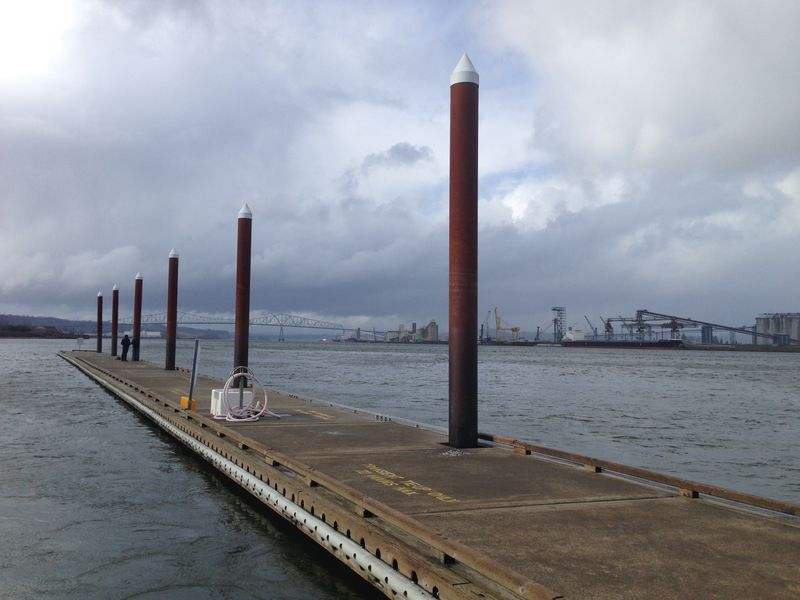
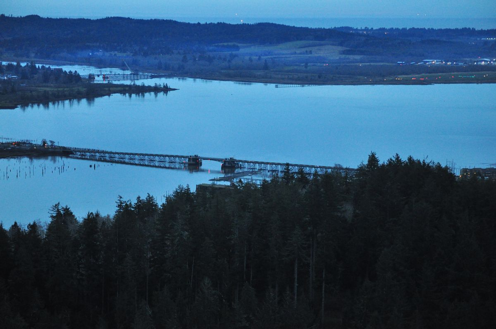
🌊 River Levels
Loading USGS gauge readings…
Flood warnings, when issued, appear in Weather Alerts above. Readings are provisional USGS data.
🌊 River Tides
The Columbia is a tidal river the whole way past St. Helens — the ocean reaches up the channel twice a day. For the boat ramp, the dock, the river beach, or a fishing hour, here is the next turn of the tide at the county's two NOAA stations.
Loading NOAA tide predictions…
Tide predictions from NOAA Tides & Currents (station 9439201 at St. Helens, station 9439099 at Wauna), in feet above mean lower low water. River flow pushes real water off the prediction — a high river runs higher and later — so treat the times as the plan, not a promise.
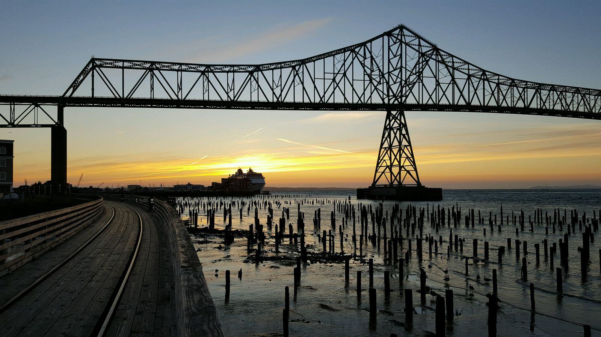
🎣 Fishing — Worth Going?
Fishing for
Where
When
Reading the river…
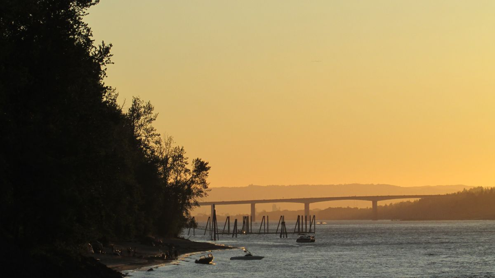
Fish Counts — the Dams
Every salmon bound for the upper Columbia passes Bonneville Dam, where the Army Corps counts them through the fish ladders. The newest posted day usually lags the calendar a day or two — the counts are tallied from video and checked before they post.
Loading the dam counts…
Counts: U.S. Army Corps of Engineers, published by the Fish Passage Center and Columbia Basin Research (DART). A zero is a real answer, not a gap — it means the counters saw none that day.
🎣 Salmon Tracker
Plotting the runs…
The day plan — fish the current
Strong current is plunking and anchor time; when the current dies, that’s trolling time. Pick your method and the plan calls out your windows.
Reading the river’s current predictions…
🎣 Steelhead — the Small Rivers
Is today a good day to fish for steelhead? No counts exist for these creeks mid-season — the hatchery traps are counted, but the numbers are published after the fact — so this judges the day, not the fish: run timing, flow, water clarity, cold and weather. Tap a river for the full breakdown.
Checking the creeks…
General Oregon rule: steelhead angling is legal from one hour before sunrise to one hour after sunset — each river's own regs can add exceptions, so check yours.
🌅 The County Almanac
Working out today's light…
Sunrise, sunset, twilight and the moon are computed on this page from the sun's and moon's positions — there is no feed behind them, nothing to go stale, and like every printed almanac they're good to a few minutes. Times are for the town named in the panel; set a home town above and the almanac follows it.
Earthquakes — last 30 days
Loading USGS earthquake data…
🔥 Wildfires
Loading interagency wildfire data (NIFC WFIGS)…
Official incident data from the National Interagency Fire Center (WFIGS). For evacuation notices, always follow Columbia County Emergency Management and InciWeb.
🌫️ Air & Smoke
The other invisible thing over the county — what’s in the air you’re breathing. Wood-stove smoke on still winter nights, wildfire smoke in summer. Here’s the Air Quality Index for the town on the Forecast card above, and where the model says it goes from here.
Checking the air…
A modeled estimate from Open-Meteo’s atmosphere model (Copernicus CAMS) — there is no official AQI monitor in the county, so read it as a good guide, not a gauge on a pole. Official readings and alerts: AirNow.
Sponsor spotlight
The local businesses that keep this page free
Columbia County Live carries no ad network and no paywall — a small number of local businesses fund it with named spots like this one. The first three become Founding Sponsors: their names stay on the Today page for good, at a $49/mo rate that never rises while they’re with us. 0 of 3 claimed so far.
Going? Tap ＋ Add on any event and it lands in your own calendar — time converted, official page attached — so your phone reminds you the day it happens.
Babysitters, cleaners, handymen, pet sitters, tutors — the one-person businesses this county runs on, in one plain list. The storefronts sit up top as sponsors and featured businesses; this shelf is for the smallest operators. Tap a category to narrow it down.
Tap a pin to find the business in the list below.
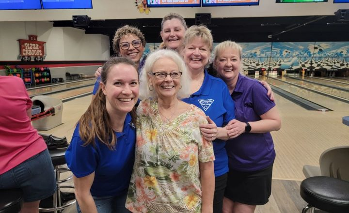
Oregon Trail Lanes Founding business
St. Helens · Other local services
Bowling, leagues and birthday parties on Columbia River Highway.
The request rides the same short form as sponsor requests. Every listing is read by a person and checked before it appears — nothing posts automatically, and there’s no online payment.
Every number here names its source and its age. Green is fresh, amber is aging, red means treat the panel as stale and check the official source. If a feed ever goes quiet, this board shows it instead of hiding it.
Checking source ages…
🔔 The County Watch
Not watching
Everything else on this page waits for you to come and look. The watch doesn't. Leave this page open — in a tab, installed on your home screen, or up on the wall — and it checks the National Weather Service, the bridge, and the ferry every two minutes. If a new warning posts, the bridge closes, or the ferry puts out an alert while you're not looking, it tells you: a notification on this device where the browser offers them, a line in the log below, and — if you tick the box — it says new warnings out loud.
Setting up the watch…
Honest limits: the watch only runs while this page is open on this device — closing the tab stops it, and a phone may pause a background tab. It's a convenience, never a replacement for the National Weather Service, NOAA Weather Radio, or Columbia County emergency alerts.
Keep Columbia County Live handy
Free, no ads, no sign-up. Put it on your home screen like an app, send it to a neighbor who drives US-30 — or prop a tablet on the counter and tap Wall display: the county's answers, big and rotating, made for the screen that's already on.
🖨️ The county sheet is one printed page with today’s answers — made for the fridge door, the library bulletin board, and the shop counter. Posting it where neighbors pass by is this site’s favorite kind of advertising.
🌎 ¿Hablas español? Tap the courthouse logo up top to open the menu, then tap En español — this page’s headings, buttons and notes switch to Spanish. Live readings, alerts and event listings keep arriving in English from their official sources.
Put Columbia County Live on your home screen
Installed, it opens full-screen like an app — no address bar, its own icon, the county one tap away. Free, and it still updates itself all day.
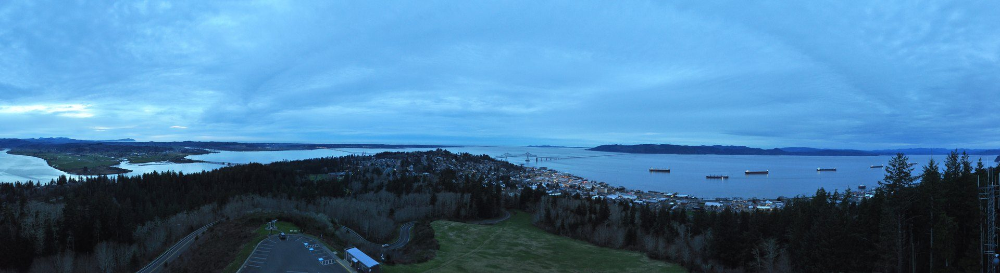
📸 The Community Screensaver
The wall display rotates the county’s answers. The screensaver is the quieter room: county photographs, changing slowly, with the clock and just the answers you pin — made to be left running on a kitchen tablet, a shop counter, or the TV in a waiting room. It refreshes itself from the same live sources as this page, never asks for anything, and leaves with one tap.
Putting it on a TV or an office screen? Open this page with ?display=1 added to the end of the address and the screensaver starts by itself — bookmark that address on the TV’s browser and it just comes up.
Your answers on the screen
Pin the answers you care about with the chips below. The screensaver shows your pins, big enough to read across the room. Pins are kept on this device only, and you can change them any time.
Share your county photo
The photographs in the screensaver come from the county itself — and yours could be one of them. Send a photo you took anywhere in Columbia County and, once it’s approved, it joins the pool every screensaver cycles through, with your name on it. Free, always.
One honest gate: every photo is looked at by a person before it joins the pool — for the place, the picture, and the permission. Nothing appears automatically, and a photo that isn’t yours to share never goes up.
🌲 About Columbia County Live
Columbia County Live is one live look at Columbia County, Oregon — US-30 and the Lewis & Clark Bridge, the Columbia and Nehalem rivers, weather alerts, the Oscar B ferry, and what’s on around the county — assembled from official public sources and refreshed all day. It is built and run by Nomad Development Group, a small local studio, on free public data and free hosting, which is how a page like this can exist for a county of 54,000 at all.
Why it’s free — and what stays free. The core of this page is public-safety data: weather alerts, river levels, bridge and ferry status, road conditions. That core is free, carries no sponsor, and stays that way — it will never sit behind a paywall. That promise is the reason the page exists.
Support this service — founding sponsors
Down the road, a small number of local businesses will be able to support the service as founding sponsors — a named spot on this page at small-town prices, once there is a real audience to show them. Nothing is for sale today. If your business or organization would want first word when founding sponsorship opens, tell us — the interest list we build now is who hears first.
That button opens an email to nomadov3rland@gmail.com. Include your business or organization name, a contact name, your town, and what you’re interested in — founding sponsor, listing a business, or something else — and we’ll write back. Interest only: no payment, no commitment, nothing to buy yet.